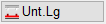
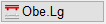
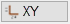
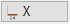
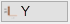

")

Sie können einzelne oder auch mehrere FEM-Datensätze in Form von aS-Werten in die Zeichnung einlesen und bearbeiten. Die FEM-Datensätze werden mit der Zeichnung gespeichert.
Bevor Sie die Ergebnisse der FEM-Berechnung einlesen, sollten Sie den Grundriss für die Bewehrung aufbereitet haben. Gegebenenfalls ist eine zweite Grundrissdarstellung für die obere Bewehrungslage erforderlich. Die Ergebnisse werden vektoriell dargestellt. Die Längen der Vektoren in X- und Y-Richtung geben qualitativ die Größe des jeweiligen aS-Wertes an. Darüber hinaus werden die Linien in den Farben der Stifte angezeigt. Höhere Stiftnummer bedeutet mehr aS.
Die mit der Funktion [DatLes] eingefügten FEM-Daten können für die automatische Bewehrung [Formst | AutBew] sowie für die Bewehrung mit BAMTEC-Teppichen [Option | BAMTEC] verwendet werden. Wenn es Bereiche mit unterschiedlicher Grundbewehrung gibt, können Sie diese Differenzen mit der Funktion [asAbzh] (as-Werte abziehen) unterschiedlich vornehmen.
Funktionen |
Beschreibung |
|---|---|
FEM-Datei einlesen. |
|
as-Linien verschieben. |
|
as-Texte einschalten. |
|
as-Texte ausschalten. |
|
as-Linien einschalten. |
|
as-Linien ausschalten. |
|
Darstellung der as-Vektoren ändern. |
|
Größenfaktor für Darstellung einstellen. |
|
as-Werte abziehen. |
|
as-Werte addieren. |
|
as-Werte löschen. |
|
Ursprüngliche Werte anzeigen. |
Optionen |
Beschreibung |
|---|---|
  |
as-Werte der unteren / oberen Lage. Diese Optionen beziehen sich auf alle eingefügten FEM-Daten. |
   |
Filter zur Anzeige der Bewehrungsrichtung: XY-, X- oder Y je nach Bewehrungslage. Diese Optionen beziehen sich auf alle eingefügten FEM-Daten. |
|
Auswahlrahmen rechteckig / polygonal. |


Siehe auch: